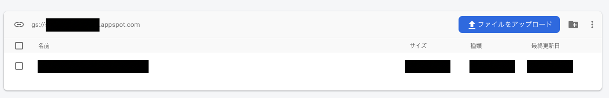

例えば購入者に音楽や動画を配信するサービスを Firebase で実装することを考えましょう。 配信するファイルはなんらかのオブジェクトストレージに格納されますが、その公開 URL は購入者以外は見えてはいけません。 そのためそのファイルには特定の IP アドレスや環境からしかアクセスできないようにすることも多く、例えば S3 だとバケットポリシーで IP 制限をかけることができます。 そして IP 制限をかけた状態で、認証したユーザーに公開用 URL を発行できる機能をバックエンドのサーバーに実装し、権限のあるユーザーのみに期間限定の署名付き URL を発行してファイル URL を共有できるようにします。
一方で Firebase の CloudStorage には バケットポリシーが無く IP 制限をかけることができないといった問題があります。 そこで類似の機能をバケットポリシーを使わずに rules と adminAPI で実現する方法を紹介します。
結論
rules でファイルへのアクセスを全て禁止にして、バックエンドで AdminAPI を使った認証と署名付き URL を作成し返却する
rules で全ファイルへのアクセスを禁止する
rules_version = '2';
service firebase.storage {
match /b/{bucket}/o {
match /{allPaths=**} {
allow read, write: if false;
}
}
}
現実的にはこういった一括で許可しないルールを書くことはないとは思いますが、該当のフォルダに対する read を禁止します。 これによりクライアントアプリからはそのフォルダ配下のファイルにアクセスをすることができません。 ただし、特権を持った adminAPI からはアクセスができます。 そのためクラインアント側からのアクセスを全て禁止して、特権を持ったサーバーからファイルを操作するようにします。
バックエンドを用意する
firebase にはクライアント用の SDK 以外にもバックエンドから叩ける admin ライブラリがあります。
$ npm i firebase-admin
このライブラリを使うと特権的な操作ができます。 そのため初期化には予めコンソールから DL した秘密鍵を使います。
ここでは例として NodeJS + NextJS(API Routes)を使って実装します。
初期化は initializeApp という関数で行います。
import { NextApiRequest, NextApiResponse } from "next"
import * as admin from "firebase-admin"
var serviceAccount = require("path/to/key.json")
admin.initializeApp({
credential: admin.credential.cert(serviceAccount),
storageBucket: "hoge.appspot.com",
})
cloud storage を使うのならこのとき storageBucket も渡しましょう。 ここではデフォルトバケットを指定できます。 ここで指定しなければデフォルトバケットをのちに呼び出せないのでこの設定が必要となります。 デフォルトバケットの名前は、storage のこの部分です。

次に API のエンドポイントを作っていきます。 署名付き URL を返すエンドポイントとしてこういうものを用意します。
export default async (req: NextApiRequest, res: NextApiResponse) => {
res.status(200).json({ url })
}
ではまずアクセスが誰からされたかという識別をします。
export default async (req: NextApiRequest, res: NextApiResponse) => {
// FIXME: request header に書くべき
// TODO: リクエストのバリデーション
const idToken = req.query.idToken as string
const vid = req.query.vid as string
admin
.auth()
.verifyIdToken(idToken)
.then(function (decodedToken) {
let uid = decodedToken.uid
})
.catch(function (error) {
console.error(error)
res.status(400).json({ message: "fail" })
})
}
クライアントからはユーザーの識別可能な token が送られてくると仮定します。
そのトークンはクライアント側からこのように作成できます。
const cu = firebase.auth().currentUser
if (!cu) {
alert("you should login")
return
}
cu.getIdToken(true)
.then(function (idToken) {
// TODO: 便宜上そうしているけどURLにトークン入れたらだめだよ！！！
fetch(`/api/movie?idToken=${idToken}&vid=${videoId}`)
.then(res => res.json())
.then(d => {
// no op
})
})
.catch(function (error) {
// Handle error
})
（普通は URL からその token を見れないようにリクエストヘッダにセットするとは思いますが、楽に説明したいのでクエリパラメタに含めています。）
そして firestore でユーザーが購入した動画などが管理されているとして、それをチェックし購入済みであれば署名 URL を発行します。 ユーザーが購入したかどうかは、firestore にある user コレクションが movie コレクションに対する Ref の配列を持っているかどうかなどで判断すれば良いでしょう。
export default async (req: NextApiRequest, res: NextApiResponse) => {
// FIXME: request header に書くべき
const idToken = req.query.idToken as string
const vid = req.query.vid as string
admin
.auth()
.verifyIdToken(idToken)
.then(function (decodedToken) {
let uid = decodedToken.uid
admin
.firestore()
.collection("users")
.doc(uid)
.get()
.then(async d => {
const userData = d.data(
// userが購入した映像
const userVideos = userData.videos as string[]
// ユーザーが購入していたら
if (userVideos.includes(vid)) {
const bucket = admin.storage().bucket()
const video = bucket.file(vid)
// 動画へのアクセスURLを発行
const url = await video.getSignedUrl({
action: "read",
expires: "今から一日後の時間など",
})
res.status(200).json({ url })
}
res.status(404).json({ url: "notfound" })
})
.catch(err => {
console.error("err", err)
res.status(400).json({ message: "fail access video" })
})
})
.catch(function (error) {
console.error(error)
res.status(400).json({ message: "fail" })
})
}
ここでのミソは getSignedUrl です。
getSignedUrlは cloud storage の apmin API(で取得したファイルオブジェクト)が持っている機能で、動画のリソースの期間限定 URL を発行することができます。
Cloud Storage はデフォルトでアクセス権限を付与しない限りはリソースは見えないのですが、ファイル名が分かっていると見つけることができます。
（OGP 画像を返すときにたまに使われる裏技）
そのため制限を加えます。
これで ファイル URL を取得できるようになりました。 あとは この API をクライアントサイドから叩いて fileURL を取得すれば、購入者限定の動画視聴機能が実現できます。